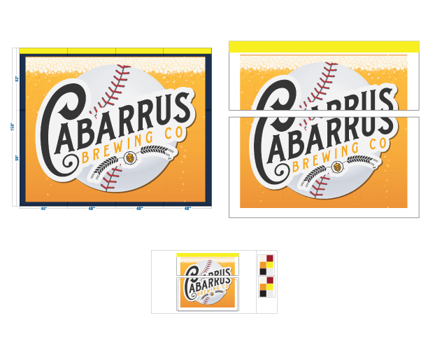
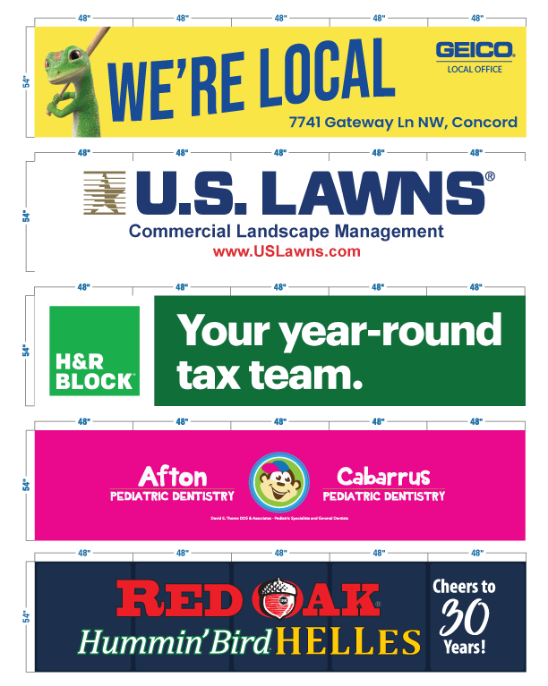
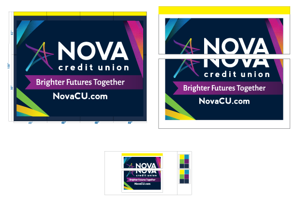

Project Information
- Role:
Lead Designer | Project Lead - Overview:
As part of the rebranding and relocation of the Kannapolis Cannonballers, we embarked on the ambitious task of building a new stadium to serve as their home. Alongside this endeavor, we aimed to create an immersive and visually captivating environment for fans and sponsors. My team's objective was to handle the stadium graphics and layout, ensuring high-quality visuals that align with the Cannonballers' new brand identity and attract sponsors.
Layout
Working closely with the Cannonballers, we designed a graphic layout that seamlessly integrated the sponsor graphics into the stadium's architecture. The graphics were thoughtfully curated to reflect the team's renewed identity and resonate with the local community. We focused on creating a visually striking and cohesive layout that maximized sponsor exposure and enhanced fan experiences.

Challenges
One of the primary challenges we encountered was the massive size of the files and amount of data in the large raster images, as well as the complexity in the vector files used for the sponsor graphics. By optimizing the software settings and utilizing file saving and formatting techniques, we were able to reduce the file sizes without compromising image quality. These techniques allowed us to work more efficiently, reducing software crashes and improving workflow.



Printing
Working closely with our team members specializing in large-format printing, we ensured the stadium sponsor graphics were printed to the highest industry standards. Prior to printing, we meticulously prepared the files, optimizing them for printing. This involved utilizing appropriate file formats, ensuring color accuracy, and performing thorough quality checks. By leveraging our expertise and attention to detail, we achieved excellent print quality, vibrant colors, and sharp visuals in the final prints.

Outcome
Through the successful rebranding and relocation of the Cannonballers, the new stadium has become a landmark in the city of Kannapolis. The sponsor graphics, seamlessly integrated into the stadium's design, provide valuable visibility for sponsors and enhance the overall aesthetic and atmosphere. Our software optimizations, along with strategic file saving and formatting, allowed us to overcome the challenges presented by the complex graphic files. The exceptional print quality and attention to detail have created an immersive fan experience and a powerful platform for sponsors to engage with their target audience.